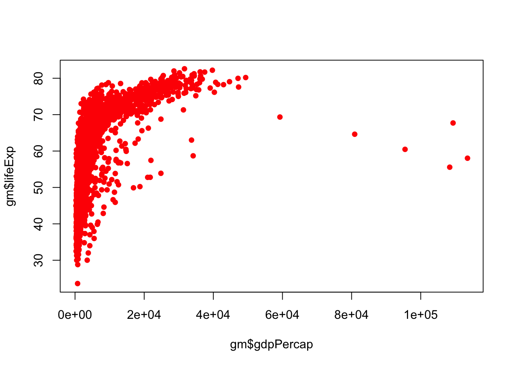
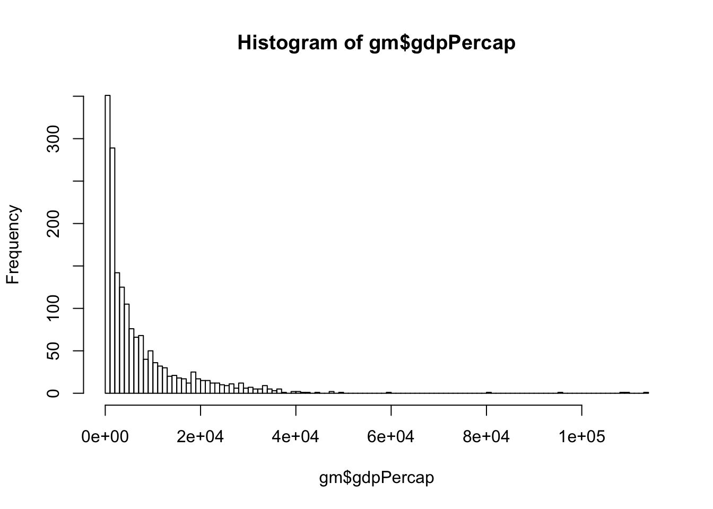

Chapter 1 Introduction to R and RStudio
R is the underlying statistical computing environment. You can think of this like the engine of a car. That makes RStudio like the dashboard1.


RStudio is an integrated development environment (IDE) that allows us to interact with R. RStudio sits on top of R and makes writing and executing R code a lot easier. We’ll be benefiting from many of the added features that come with RStudio and we will point them out as we go.
1.0.1 Panes in RStudio
When you open RStudio, you will have access to R (there is no need to open R directly).
Now go to the top menu to open a new R Script File –> New File –> R Script
Great! Now you will see four panes
- I have mine set up as follows:
- Editor / script / source in the top left
- Console bottom left
- Environment/history on the top right
- Plots/help on the bottom right

Four pane layout in RStudio
On the top left is the script or editor window. This is where we are going to write all of our code.
On the lower left we have the console window. This is where R is running, and this is what you would see if you opened R instead of RStudio. In this pane we can see the code we send and then the answer.
The top right has the environment and history tabs. The Environment is a list of all objects that are saved in memory. The History tab shows all commands that have been run.
- On the bottom right hand side there’s a window with several tabs.
- Files shows the file structure of the working directory.
- Plots is where your visualizations will appear.
- Packages shows all of the installed packages where checked ones are loaded and unchecked packages are not loaded.
- Help shows information about functions.
- Viewer for viewing other kinds of output, like web content.
1.0.2 RStudio Global Options
- There is one set-up preference that I think everyone will prefer. Go to Tools –> Global Options
This wraps long lines of code on to the next line automatically so that you do not have to scroll left and right to see a long line of code.
1.1 Set up an R Project
I mentioned previously that RStudio has a lot of pretty handy features. One of those is the project structure
Before we can start writing code we need to set up a project so that the data and our codes will be in the same place. Go to File –> New Project–> New Directory. I will name mine IntroR and it will be a folder on my desktop

New R Project
Now we have opened up a new instance of RStudio running inside the IntroR folder. Notice on the top of the console pane and the Files pane (bottom right) that the path to the IntroR folder is specified.
When we start reading in data it will be important that the code and the data are in the same place. Creating a project creates an Rproj file that runs R in that folder. If you are familiar with working directories, this process is setting the working directory for this project as this folder.
Once you have a project set up, when you want to read in dataset whatever.txt, you will be able to easily specify the path pointing to whatever.txt rather than having to specify a full path. This is critical for reproducibility, and we’ll talk about that more later.
1.1.1 Download learning materials
To get things arranged for later, please download the dataset we are going to use. Right click –> Save link as to download the file to your computer.
Move the dataset to your IntroR directory in a subfolder called data.

File structure
Now that we have a project directory and the dataset inside that project directory, make a new R script by going to File –> New File –> R Script. Now you too have the 4 pane layout.
1.2 R as a calculator
R can be used as a calculator. Make sure you’re typing into into the editor. Do not code in the console because this work will not be saved.
Use the Run button on the top of the script pane to run the code.
2 + 2## [1] 4Notice the output in the console that tells us the code we wrote and the answer. Let’s try some others.
5 * 4## [1] 202 ^3## [1] 8Instead of using the Run button to run code, let’s try the keyboard shortcut to run code. To send code from the editor to the console, place your cursor on a line of code and use CMD+Enter (Mac) or Ctrl+Enter (Windows). This is way faster than using your mouse to hit the Run button each time.
Go back to your code above and run them using the keyboard. We can also run multiple lines of code at once. Now highlight 2 lines of code and run them together.
R also knows order of operations and scientific notation.
(5 + 3)^2## [1] 645 + 3^2## [1] 145e4## [1] 500001.2.2 Creating R objects
Let’s learn to create R objects next. We assign values to objects using the assignment operator “<-”. This arrow is typed with a less than sign followed by a dash. We first name the object on the left and then provide the assignment operator <-, and then the value.
Let’s create an object called thing1 that takes the value 55.
thing1 <- 55Look in the Environment pane (top right) to see your new R object!
<- is the assignment operator in R. It assigns values on the right to object names on the left. Think of it like an arrow that points from the value to the object. The <- is mostly similar to = but not always. Learn to use <- as it is good R programming practice. Using = in place of <- can lead to issues down the line. The keyboard shortcut for inserting the <- operator is option + dash(Mac) and Alt + dash (Windows).
- Objects can be given any name such as
x,current_temperature, orsubject_id, but they may not have a space in the name. You want your object names to be explicit and not too long. They also cannot start with a number (2xis not valid butx2is). R is case sensitive (e.g.,thing1is different fromThing1).
Thing1 <- 60Look in the Environment pane to see that there are now 2 different thing1 objects since we used different casing in the spelling of the object names.
There are some words that should not be used as object names because they represent the names of functions in R. It is best to not use function names as object names since it will be confusing to tell the difference between the object and the function (e.g., c, T, mean, data, df, weights).
If in doubt, start typing the name and if RStudio suggests something it already knows, then that name is already in use.
For example, it is perfectly reasonable to think that data is a great name for your dataset but as you start to type it, the autocomplete function in RStudio tells you that data already exists.
data()Try to use nouns for object names, and verbs for function names to help yourself remember what each item is.
When assigning a value to an object, R does not print anything. You can ask to print the value by typing the object name:
thing1## [1] 55We can overwrite the value of thing1 by re-assigning it
thing1 <- 70
#then call its name to see the object
thing1## [1] 701.2.3 EXERCISE 1
Try these on your own
A. You have a patient with a height (inches) of 73 and a weight (lbs) of 203. Create r objects labeled ‘height’ and ‘weight’.
SHOW ANSWER A
height <- 73
weight <- 203
height## [1] 73weight## [1] 203
B. Convert ‘weight’ to ‘weight_kg’ by dividing by 2.2. Convert ‘height’ to ‘height_m’ by dividing by 39.37
SHOW ANSWER B
weight_kg <- weight / 2.2
height_m <- height / 39.37
weight_kg## [1] 92.27273height_m## [1] 1.854204
C. Calculate a new object ‘bmi’ where BMI = weight_kg / (height_m*height_m)
SHOW ANSWER C
bmi <- weight_kg / (height_m * height_m)
bmi## [1] 26.83851You can remove objects from the environment using the rm() function. You can do this one at a time or remove several objects at once by separating their names with ,. The broom button in the Environment pane will remove all objects from your environment.
rm(weight, Thing1)
# Now ask R for weight (uncomment the following line and run it)
# weight
# oops! you should get an error because weight no longer exists!1.3 Functions
A function is a verb; it tells R to do something. To call an R function, we call the name of the function followed directly by (). The items passed to the function inside the () are called arguments. Arguments change the way a function behaves
Some functions don’t need any arguments
Sys.Date() #get today's dateSome functions just take a single argument. Let’s get the square root of 961. Now let’s get the square root of object1
sqrt(961)## [1] 31To learn more about the function, type ? and then the function’s name
?sqrtSometimes functions have arguments that have a default value. In those cases, you can override the default value by specifying your own.
For example, let’s look at the help page for the rnorm() function
?rnormrnorm() generates random values from the normal distribution. We must supply the n argument since there is no default value, but there is a default value set for the mean and sd arguments.
First we’ll allow the default mean and sd.
rnorm(n = 10)## [1] -1.3090343 -1.6326215 -0.2280516 1.2211626 0.5909781 1.4393893
## [7] -1.1342667 1.6077852 0.3069296 0.8294870The above code drew 10 random draws from a normal distribution with a mean = 0 and an sd = 1
Now let’s set the n = 10, mean = 50, and the sd = 5 to see 10 random draws from a normal distribution with a mean = 50 and an sd = 5
rnorm(n = 10, mean = 50, sd = 5)## [1] 45.28830 44.17070 50.86072 43.58287 48.14721 47.79184 44.54560
## [8] 49.40777 50.06373 47.83816What happens if we do not specify n? Uncomment the code below (remove the #) to see what happens
# rnorm(mean = 50, sd = 5)In the above examples, we have labeled our arguments according to their names in the help menu. If you do not label the arguments, they will be called into the function in the order given in the help menu.
# must be in order given by help menu to work as intended
rnorm(10, 50, 5)## [1] 53.43296 56.13919 44.15177 48.47823 52.33586 55.72579 49.12621
## [8] 45.76328 44.00105 41.85812#out of order, but works bc the arguments are labeled
rnorm(n = 10, sd = 5, mean = 50)## [1] 54.62725 53.27533 50.50110 43.74475 52.20894 50.10480 46.86524
## [8] 48.82162 54.18838 48.64528To improve readability (and accuracy) of your code, we would recommend labeling your arguments.
1.3.1 EXERCISE 2
A. Use the arrow operator to create an object called object2 that stores 100 draws from a normal distribution with mean = 500 and sd = 100.
SHOW ANSWER A
object2 <- rnorm(n = 100, mean = 500, sd = 100)
object2## [1] 380.6650 468.6898 338.1565 431.2029 478.4040 343.9443 567.5280
## [8] 331.8188 439.1542 470.9660 518.0962 437.2185 482.8895 458.4672
## [15] 572.3832 394.8139 432.4172 621.5787 390.5640 546.8838 486.3190
## [22] 311.2368 541.7225 566.2155 781.1090 638.2452 469.7396 527.3384
## [29] 574.3147 455.7075 566.0264 618.3276 461.7657 585.3641 596.3315
## [36] 661.1062 689.9269 504.7466 532.5932 465.9751 421.6967 799.8182
## [43] 472.2955 516.4576 448.5830 685.5733 578.8136 475.3182 343.3749
## [50] 448.0221 521.4557 421.1669 332.0241 412.8816 451.1657 470.4274
## [57] 562.3054 475.5342 303.2014 573.5649 737.1477 557.0183 279.7531
## [64] 538.8089 478.0425 498.2814 463.6054 494.0398 642.8422 417.3124
## [71] 448.8654 524.3990 340.5277 411.6638 443.0320 526.4757 498.4000
## [78] 512.8306 627.3920 598.5247 516.5243 522.0931 287.1633 398.9468
## [85] 306.3976 384.9857 526.0013 351.8215 397.7918 527.3443 541.1173
## [92] 545.8968 580.9618 600.4870 346.5521 547.5958 605.4174 407.7034
## [99] 327.2423 556.7784
B. Call hist(object2) to create a histogram of your normal distribution
SHOW ANSWER B
hist(object2)
Look at the environment. What does it tell you about object2?
The environment pane provides details about objects. We can see that object2 is a numeric object with items 1 through 100. Then we can see the first few numeric items in the object.
Let’s create some more R objects that are collections of several values. To accomplish this, we will use the function c(), which stands for concatenate or combine. Usually functions are named with a full word describing what they do but because combining items together is so common, this function gets a very short name.
object3 <- c(55, 60, 35, 70)Check out the environment now. It worked! We created object3
Let’s create another object containing a different type of data
object4 <- c("Jack", "Leila", "Rohit")Check out the environment now. Notice that it specifies that object4 is a character (chr) vector
1.4 More Functions
Let’s sum() everything in object3
sum(object3)## [1] 220Try the mean() function on object3
mean(object3)## [1] 55What happens if we try to sum() object4? Uncomment the code below to try it
#sum(object4)What if we take the square root of object3? The sum() and mean() functions both take a vector and return one number. What about sqrt() where we want multiple answers given multiple inputs?
sqrt(object3)## [1] 7.416198 7.745967 5.916080 8.366600It worked! Most functions in R are vectorized meaning that they will work on a vector as well as a single value. This means that in R, we usually do not need to write loops like we would in other languages.
1.4.1 EXERCISE 3
Try the following functions on object3 and on object4. What do each of the below functions do? Optionally, call up the help menu for these functions to learn more.
A. class() B. length() C. summary() D. str()
SHOW ANSWER
The class() function provides information about the type of object
class(object3)## [1] "numeric"class(object4)## [1] "character"length() tells us how many items are in each vector
length(object3)## [1] 4length(object4)## [1] 3summary() provides a summary of an object. In the case of object3, we have a 6 number numeric summary describing the minimum, 1st quartile, median, mean, 3rd quartile, and maximum. For object 4, summary() tells us that the object is a character
summary(object3)## Min. 1st Qu. Median Mean 3rd Qu. Max.
## 35.0 50.0 57.5 55.0 62.5 70.0summary(object4)## Length Class Mode
## 3 character characterFinally, str() provides the structure of an object. For object3 and object4 str() returns the same information that we see in the environment, but for more complex objects, str() can be very helpful
str(object3)## num [1:4] 55 60 35 70str(object4)## chr [1:3] "Jack" "Leila" "Rohit"1.5 DataFrames
Let’s move on to learning about dataframes. There are lots of different basic data structures in R. Besides the dataframe, there are also arrays, lists, matrices, etc. We are going to skip those in favor of spending time learning the data structure you’ll probably use most – the dataframe.
We use dataframes to store heterogeneous tabular data in R: tabular, meaning that individuals or observations are typically represented in rows, while variables or features are represented in columns; heterogeneous, meaning that columns/features/variables can be different classes (a variable like age, can be numeric, while another, like cause of death, can be a character string).
1.6 R Packages
We have the gapminder.csv file into our project directory, but we don’t know anything about it yet. Our goal will be to read it into R so we can start exploring it.
There are lots of ways to load data into R. There is a point-and-click RStudio menu and go to File > Import Data Set > Import From Text File but that is not the most reproducible way to read in data.
Instead, we would prefer that you read data into R for analysis as part of your script.
I gave you the gm dataset as a csv file. “csv” stands for comma separated values. You can save any Excel, SPSS, Qualtrics, etc. data file as a .csv and then import it into R. This is the workflow that we would recommend.
To read a csv file into R, we are going to use a function read_csv() that is accessed from a package.
You can think of an R package like an app on your phone. Fist, we will need to install it from the internet.
When we call the install.packages() function, R goes to the Comprehensive R Archive Network (CRAN) and downloads the specified package. There are over 10K packages listed on CRAN, over 1500 on Bioconductor (bioinformatics packages), and many more under development on people’s github pages etc. You can be sure a package is safe to download if it comes from the CRAN or from Bioconductor.
Uncomment the line below to run the install.packages() function
# install.packages("tidyverse")Once we have installed it to this computer, you will not need to do that again (until you update R or your OS, etc). Therefore, comment out the install line.
The library() command loads the functions from that package into the R environment so that we can use them. This is like opening the app. We will need to do this every time we open the script.
library(tidyverse)## ── Attaching packages ───────────────── tidyverse 1.2.1 ──## ✔ ggplot2 3.2.0 ✔ purrr 0.3.2
## ✔ tibble 2.1.3 ✔ dplyr 0.8.3
## ✔ tidyr 0.8.3 ✔ stringr 1.4.0
## ✔ readr 1.3.1 ✔ forcats 0.4.0## ── Conflicts ──────────────────── tidyverse_conflicts() ──
## ✖ dplyr::filter() masks stats::filter()
## ✖ dplyr::lag() masks stats::lag()We can see based on the output from the library(tidyverse) line that the tidyverse is actually a megapackage, containing 8 packages. All of these packages share a similar syntax in an attempt to simplify coding and readability for R users. Aside from the core tidyverse packages, there are around 10 other packages
Ok! Now let’s write the line of code to read the csv file into R. We will use the read_csv() function that comes from the readr package (one of the tidyverse packages).
At the beginning of the session, we asked you to save the gm file into the data directory of your project file, so when we write the path to the gm file, we’ll specify that it is in the data folder.
gm <- read_csv("data/gapminder.csv")## Parsed with column specification:
## cols(
## country = col_character(),
## continent = col_character(),
## year = col_double(),
## lifeExp = col_double(),
## pop = col_double(),
## gdpPercap = col_double()
## )If the above line did not work for you, follow the steps to create an R project with the gm file in a subdirectory called data.
Assuming you were able to load the data, let’s move on!
Let’s look at this object by calling its name
gm## # A tibble: 1,704 x 6
## country continent year lifeExp pop gdpPercap
## <chr> <chr> <dbl> <dbl> <dbl> <dbl>
## 1 Afghanistan Asia 1952 28.8 8425333 779.
## 2 Afghanistan Asia 1957 30.3 9240934 821.
## 3 Afghanistan Asia 1962 32.0 10267083 853.
## 4 Afghanistan Asia 1967 34.0 11537966 836.
## 5 Afghanistan Asia 1972 36.1 13079460 740.
## 6 Afghanistan Asia 1977 38.4 14880372 786.
## 7 Afghanistan Asia 1982 39.9 12881816 978.
## 8 Afghanistan Asia 1987 40.8 13867957 852.
## 9 Afghanistan Asia 1992 41.7 16317921 649.
## 10 Afghanistan Asia 1997 41.8 22227415 635.
## # … with 1,694 more rowsBecause we read in the data using read_csv(), the dataframe was read in as a modified dataframe called a tibble. Printing tibbles to the console looks great, but that used to not be the case. If you’d like to learn more about the difference between dataframes and tibbles please see the tibbles section of R for Data Science
Let’s also use the View() function to look at the data. Note that this is a read only viewer - not like Excel where you can go in and change cell values etc. This feature helps with reproducibility.
View(gm)Let’s go back to the script. Your script is still there. It is in a tab next to the viewer tab.
The third way to look at a dataframe or tibble is to click on the blue arrow next to the gm name in the Environment.
{width = 400px}
This view enables you to see the variable names and classes while you type code, so this is often what my environment looks like.
1.7 Inspecting Dataframes
There are several functions that are useful for investigating dataframes. We already saw some of them in the section on Functions above.
Instead of printing the whole dataframe to the console, we can print an abbreviated version using head() and tail(). By default, these functions give us the first and last 6 rows respectively
head(gm)## # A tibble: 6 x 6
## country continent year lifeExp pop gdpPercap
## <chr> <chr> <dbl> <dbl> <dbl> <dbl>
## 1 Afghanistan Asia 1952 28.8 8425333 779.
## 2 Afghanistan Asia 1957 30.3 9240934 821.
## 3 Afghanistan Asia 1962 32.0 10267083 853.
## 4 Afghanistan Asia 1967 34.0 11537966 836.
## 5 Afghanistan Asia 1972 36.1 13079460 740.
## 6 Afghanistan Asia 1977 38.4 14880372 786.tail(gm)## # A tibble: 6 x 6
## country continent year lifeExp pop gdpPercap
## <chr> <chr> <dbl> <dbl> <dbl> <dbl>
## 1 Zimbabwe Africa 1982 60.4 7636524 789.
## 2 Zimbabwe Africa 1987 62.4 9216418 706.
## 3 Zimbabwe Africa 1992 60.4 10704340 693.
## 4 Zimbabwe Africa 1997 46.8 11404948 792.
## 5 Zimbabwe Africa 2002 40.0 11926563 672.
## 6 Zimbabwe Africa 2007 43.5 12311143 470.# see the first 12 rows using the n = argument
head(gm, n = 12)## # A tibble: 12 x 6
## country continent year lifeExp pop gdpPercap
## <chr> <chr> <dbl> <dbl> <dbl> <dbl>
## 1 Afghanistan Asia 1952 28.8 8425333 779.
## 2 Afghanistan Asia 1957 30.3 9240934 821.
## 3 Afghanistan Asia 1962 32.0 10267083 853.
## 4 Afghanistan Asia 1967 34.0 11537966 836.
## 5 Afghanistan Asia 1972 36.1 13079460 740.
## 6 Afghanistan Asia 1977 38.4 14880372 786.
## 7 Afghanistan Asia 1982 39.9 12881816 978.
## 8 Afghanistan Asia 1987 40.8 13867957 852.
## 9 Afghanistan Asia 1992 41.7 16317921 649.
## 10 Afghanistan Asia 1997 41.8 22227415 635.
## 11 Afghanistan Asia 2002 42.1 25268405 727.
## 12 Afghanistan Asia 2007 43.8 31889923 975.Remember, class() tells us the type of object
class(gm)## [1] "spec_tbl_df" "tbl_df" "tbl" "data.frame"We can see that gm is a dataframe and a tibble (tbl)
We can look at the number of rows and columns with dim(), just the number of rows with nrow() and just the number of columns with ncol()
dim(gm)## [1] 1704 6nrow(gm)## [1] 1704ncol(gm)## [1] 6names() will show us the column names
names(gm)## [1] "country" "continent" "year" "lifeExp" "pop" "gdpPercap"And probably the two you’ll use the most to inspect data frames, because they are the most descriptive, are summary() and str(). Let’s start with summary()
summary(gm)## country continent year lifeExp
## Length:1704 Length:1704 Min. :1952 Min. :23.60
## Class :character Class :character 1st Qu.:1966 1st Qu.:48.20
## Mode :character Mode :character Median :1980 Median :60.71
## Mean :1980 Mean :59.47
## 3rd Qu.:1993 3rd Qu.:70.85
## Max. :2007 Max. :82.60
## pop gdpPercap
## Min. :6.001e+04 Min. : 241.2
## 1st Qu.:2.794e+06 1st Qu.: 1202.1
## Median :7.024e+06 Median : 3531.8
## Mean :2.960e+07 Mean : 7215.3
## 3rd Qu.:1.959e+07 3rd Qu.: 9325.5
## Max. :1.319e+09 Max. :113523.1Notice that the output depends on the type of column. For country, a character vector, we get a frequency count of the number of occurences of the first few countries. Same for continent. The other columns are numeric, so their summary is a six number summary showing the minimum, 1st quartile, median, mean, 3rd quartile, and the maximum.
The read_csv() determined what type of column each one was while we were reading in the data. Of course, there are arguments to change the type of column within the read_csv() function.
Let’s look now at the structure of gm.
str(gm)## Classes 'spec_tbl_df', 'tbl_df', 'tbl' and 'data.frame': 1704 obs. of 6 variables:
## $ country : chr "Afghanistan" "Afghanistan" "Afghanistan" "Afghanistan" ...
## $ continent: chr "Asia" "Asia" "Asia" "Asia" ...
## $ year : num 1952 1957 1962 1967 1972 ...
## $ lifeExp : num 28.8 30.3 32 34 36.1 ...
## $ pop : num 8425333 9240934 10267083 11537966 13079460 ...
## $ gdpPercap: num 779 821 853 836 740 ...
## - attr(*, "spec")=
## .. cols(
## .. country = col_character(),
## .. continent = col_character(),
## .. year = col_double(),
## .. lifeExp = col_double(),
## .. pop = col_double(),
## .. gdpPercap = col_double()
## .. )The structure tells us that gm is a dataframe and tibble object and it specifies the dimensions. Below that, it also gives us each of the column names with the type of data it contains and the first 4 or 5 values for each column.
1.8 Accessing variables
Notice in the str() output that there is a $ in front of each of the variable names. That symbol is how we access invidual variables / columns / vectors from a dataframe object
To access a variable from a dataframe, the syntax we want is dataframe$columnname
Let’s use this to print out all of values in the pop variable. First we call the dataframe, then $ and the variable name
gm$popWhoa. That function calls the whole column, which is 1704 observations long. Usually printing out a long vector or column to the console is not useful. Maybe we meant to call head() on one column
head(gm$pop)## [1] 8425333 9240934 10267083 11537966 13079460 14880372What if we want to see the first 20 country values?
head(gm$country, n = 20)## [1] "Afghanistan" "Afghanistan" "Afghanistan" "Afghanistan" "Afghanistan"
## [6] "Afghanistan" "Afghanistan" "Afghanistan" "Afghanistan" "Afghanistan"
## [11] "Afghanistan" "Afghanistan" "Albania" "Albania" "Albania"
## [16] "Albania" "Albania" "Albania" "Albania" "Albania"Nice! We can also use the $ to create a new variable and attach it onto our dataframe.
First let’s look at the first 20 values of the pop column
head(gm$pop, n = 20)## [1] 8425333 9240934 10267083 11537966 13079460 14880372 12881816
## [8] 13867957 16317921 22227415 25268405 31889923 1282697 1476505
## [15] 1728137 1984060 2263554 2509048 2780097 3075321Let’s say I would like a column where the population is in millions. We’ll take the original gm$pop and divide by 1e6 then save it as a new column on the dataframe.
# dataframe$newvar <- dataframe$oldvar / 1e6
gm$popmill <- gm$pop / 1e6
#head of the new column
head(gm$popmill)## [1] 8.425333 9.240934 10.267083 11.537966 13.079460 14.880372Great!
Using this $ syntax, let’s calculate some descriptive statistics for life expectancy in the gm dataset.
Notice that the lifeExp variable is mixed case, so be careful in spelling. However, RStudio’s autocomplete function can help. Once you type the gm$ RStudio autocompletes with the options for variable names so you can just select from the list.
mean(gm$lifeExp)## [1] 59.47444sd(gm$lifeExp)## [1] 12.91711range(gm$lifeExp)## [1] 23.599 82.6031.8.1 EXERCISE 4
A. What’s the standard deviation of the population variable (hint: get help on the sd function with ?sd)
B. What’s the mean gdpPercap?
C. What’s the range of years represented in the data?
D. Run a summary on the lifeExp column
SHOW ANSWERS
sd(gm$pop)## [1] 106157897mean(gm$gdpPercap)## [1] 7215.327range(gm$year)## [1] 1952 2007summary(gm$lifeExp)## Min. 1st Qu. Median Mean 3rd Qu. Max.
## 23.60 48.20 60.71 59.47 70.85 82.60While the gm dataset is fully complete (no missing values), in real life, dataframes often come with missing values. For basic statistical functions like mean, sd, etc., there is an argument na.rm that we can use to remove missing values prior to calculating the statistic.
In this case, the result will not change because we do not have any missings, but in case your dataset does, here is what the code would look like
# calculate the mean population
mean(gm$pop)## [1] 29601212#calculate the mean population after removing missings
mean(gm$pop, na.rm = TRUE)## [1] 296012121.9 Subset a dataframe using filter()
Often we want to look at just a subset of the data that meet certain criteria. One really nice way to do this is the filter() function from the dplyr package. The dplyr package is one that we loaded when we loaded the tidyverse.
filter() subsets rows of a dataframe.
The first argument to filter() is the dataframe we are filtering from and the second argument is the logical condition(s) the row must meet to be returned
There are six basic logical operators in R -equal to == -not equal to != -greather than > -greater than or equal to >= -less than < -less than or equal to <=
You can chain multiple conditions together with the AND operator & or the OR | operator
Let’s see how it works by filtering for rows where the population is over 70Million. The first argument is the dataframe and the second is the logical criteria a row must meet to be returned. I’ll choose to use my new popmill variable
filter(gm, popmill > 70)## # A tibble: 118 x 7
## country continent year lifeExp pop gdpPercap popmill
## <chr> <chr> <dbl> <dbl> <dbl> <dbl> <dbl>
## 1 Bangladesh Asia 1972 45.3 70759295 630. 70.8
## 2 Bangladesh Asia 1977 46.9 80428306 660. 80.4
## 3 Bangladesh Asia 1982 50.0 93074406 677. 93.1
## 4 Bangladesh Asia 1987 52.8 103764241 752. 104.
## 5 Bangladesh Asia 1992 56.0 113704579 838. 114.
## 6 Bangladesh Asia 1997 59.4 123315288 973. 123.
## 7 Bangladesh Asia 2002 62.0 135656790 1136. 136.
## 8 Bangladesh Asia 2007 64.1 150448339 1391. 150.
## 9 Brazil Americas 1962 55.7 76039390 3337. 76.0
## 10 Brazil Americas 1967 57.6 88049823 3430. 88.0
## # … with 108 more rowsWe do not need to specify gm$popmill because the first argument told R we would be operating within the gm dataframe. Therefore, we need only specify the variable name in the second argument.
118 rows meet this criteria.
Now let’s see rows belonging to the United States. First let’s use View() to see how USA is spelled. Click on the country column header to sort by country to quickly scroll to the U section.
View(gm)Ok, now that we know how it is spelled, we can write a line of code to filter for where country is ‘United States’. We need the quotes because country is a character (factor) variable.
filter(gm, country == 'United States')## # A tibble: 12 x 7
## country continent year lifeExp pop gdpPercap popmill
## <chr> <chr> <dbl> <dbl> <dbl> <dbl> <dbl>
## 1 United States Americas 1952 68.4 157553000 13990. 158.
## 2 United States Americas 1957 69.5 171984000 14847. 172.
## 3 United States Americas 1962 70.2 186538000 16173. 187.
## 4 United States Americas 1967 70.8 198712000 19530. 199.
## 5 United States Americas 1972 71.3 209896000 21806. 210.
## 6 United States Americas 1977 73.4 220239000 24073. 220.
## 7 United States Americas 1982 74.6 232187835 25010. 232.
## 8 United States Americas 1987 75.0 242803533 29884. 243.
## 9 United States Americas 1992 76.1 256894189 32004. 257.
## 10 United States Americas 1997 76.8 272911760 35767. 273.
## 11 United States Americas 2002 77.3 287675526 39097. 288.
## 12 United States Americas 2007 78.2 301139947 42952. 301.Now let’s return the data that meets multiple criteria at once. We’ll use the & to combine the year == 1982 and country == “United States” criteria
filter(gm, year == 1982 & country == 'United States')## # A tibble: 1 x 7
## country continent year lifeExp pop gdpPercap popmill
## <chr> <chr> <dbl> <dbl> <dbl> <dbl> <dbl>
## 1 United States Americas 1982 74.6 232187835 25010. 232.We’ll do one more together before you will practice on your own. Let’s filter the gm dataset for rows where the population is higher than 1 billion (1e9). This time, let’s start with the original pop variable
filter(gm, pop > 1e9)## # A tibble: 8 x 7
## country continent year lifeExp pop gdpPercap popmill
## <chr> <chr> <dbl> <dbl> <dbl> <dbl> <dbl>
## 1 China Asia 1982 65.5 1000281000 962. 1000.
## 2 China Asia 1987 67.3 1084035000 1379. 1084.
## 3 China Asia 1992 68.7 1164970000 1656. 1165.
## 4 China Asia 1997 70.4 1230075000 2289. 1230.
## 5 China Asia 2002 72.0 1280400000 3119. 1280.
## 6 China Asia 2007 73.0 1318683096 4959. 1319.
## 7 India Asia 2002 62.9 1034172547 1747. 1034.
## 8 India Asia 2007 64.7 1110396331 2452. 1110.1.9.1 EXERCISE 1.5
Use the filter() function to return rows matching the given criteria.
A. Which rows have life expectancies of more than 80 years (>80)?
SHOW ANSWER A
filter(gm, lifeExp > 80)## # A tibble: 21 x 7
## country continent year lifeExp pop gdpPercap popmill
## <chr> <chr> <dbl> <dbl> <dbl> <dbl> <dbl>
## 1 Australia Oceania 2002 80.4 19546792 30688. 19.5
## 2 Australia Oceania 2007 81.2 20434176 34435. 20.4
## 3 Canada Americas 2007 80.7 33390141 36319. 33.4
## 4 France Europe 2007 80.7 61083916 30470. 61.1
## 5 Hong Kong, China Asia 2002 81.5 6762476 30209. 6.76
## 6 Hong Kong, China Asia 2007 82.2 6980412 39725. 6.98
## 7 Iceland Europe 2002 80.5 288030 31163. 0.288
## 8 Iceland Europe 2007 81.8 301931 36181. 0.302
## 9 Israel Asia 2007 80.7 6426679 25523. 6.43
## 10 Italy Europe 2002 80.2 57926999 27968. 57.9
## # … with 11 more rows
B. Which countries had a low GDP per capita (< 500) in 2007?
SHOW ANSWER B
filter(gm, gdpPercap < 500 & year == 2007)## # A tibble: 4 x 7
## country continent year lifeExp pop gdpPercap popmill
## <chr> <chr> <dbl> <dbl> <dbl> <dbl> <dbl>
## 1 Burundi Africa 2007 49.6 8390505 430. 8.39
## 2 Congo, Dem. Rep. Africa 2007 46.5 64606759 278. 64.6
## 3 Liberia Africa 2007 45.7 3193942 415. 3.19
## 4 Zimbabwe Africa 2007 43.5 12311143 470. 12.3filter(gm, year == 2007 & gdpPercap < 500) ## # A tibble: 4 x 7
## country continent year lifeExp pop gdpPercap popmill
## <chr> <chr> <dbl> <dbl> <dbl> <dbl> <dbl>
## 1 Burundi Africa 2007 49.6 8390505 430. 8.39
## 2 Congo, Dem. Rep. Africa 2007 46.5 64606759 278. 64.6
## 3 Liberia Africa 2007 45.7 3193942 415. 3.19
## 4 Zimbabwe Africa 2007 43.5 12311143 470. 12.3# order doesn't matter
C. Which rows have extremely low GDP per capita (< 300) OR extremely low life expectancy (< 30)?
SHOW ANSWER C
filter(gm, gdpPercap < 300 | lifeExp < 30)## # A tibble: 6 x 7
## country continent year lifeExp pop gdpPercap popmill
## <chr> <chr> <dbl> <dbl> <dbl> <dbl> <dbl>
## 1 Afghanistan Asia 1952 28.8 8425333 779. 8.43
## 2 Congo, Dem. Rep. Africa 2002 45.0 55379852 241. 55.4
## 3 Congo, Dem. Rep. Africa 2007 46.5 64606759 278. 64.6
## 4 Guinea-Bissau Africa 1952 32.5 580653 300. 0.581
## 5 Lesotho Africa 1952 42.1 748747 299. 0.749
## 6 Rwanda Africa 1992 23.6 7290203 737. 7.291.10 Plots in base R
Plots are a great way to help us explore our dataset to see relationships, investigate interactions, diagnose problems, etc.
Here we will introduce plotting using base R (without loading any extra packages). Chapter 2 is all about plotting using the premier plotting package in R, ggplot2. Jump to /@ref(ggplot)
Let’s start out with a histogram of the life expectancy variable from gm.
hist(gm$lifeExp)
R decided how many breaks to insert in the above histogram, but we can set that manually using the breaks = argument.
hist(gm$lifeExp, breaks=100)
We can also change the color of the bars using col =.
hist(gm$lifeExp, breaks=100, col='blue')
If we wanted to look at more than one numeric variable we could try a scatterplot. The syntax for plot(dataframe$varX, dataframe$varY)
plot(gm$gdpPercap, gm$lifeExp)
The default plotting character in base R is an open circle, which I dislike. Let’s change that using the pch = argument, which stands for plotting character. pch ranges from 0 - 25 and you can easily search for what each looks like on the internet. I’ll change mine to pch = 16, a filled-in circle.
plot(gm$gdpPercap, gm$lifeExp, pch = 16)
Next, I would like to change the color of the points to red using col = "red"
plot(gm$gdpPercap, gm$lifeExp, pch = 16, col = "red")
You can see the names of all 657 base R colors
colors()To add a title, the argument is main =
plot(gm$gdpPercap, gm$lifeExp, pch = 16, col = "red", main = "Life Exp vs GDP")
Finally, we’ll add an xlabel and a ylabel both in quotes.
plot(gm$gdpPercap, gm$lifeExp, pch = 16, col = "red", main = "Life Exp vs GDP",
ylab = "Life Expectancy (years)",
xlab = "Per-capita GDP ($)")
There are hundreds of plotting parameters you can use to customize your plot’s appearance. I know these parameters because I have learned them. The internet is your friend in this case, so if you forget how to modify a parameter, don’t be afraid to Google it.
1.10.1 EXERCISE 5
Create a histogram to show the distribution of the gdpPercap variable with 100 breaks. Optional: Add color, axis labels, and a title
SHOW ANSWER
hist(gm$gdpPercap, breaks = 100)
Visualizations are a large part of R’s appeal and in our opinion, learning to plot using ggplot2 will serve you well. Therefore, we only cover the very basics of plotting using base R here, and devote more time to a more comprehensive dive into ggplot2 in Chapter 2 /@ref(ggplot2)
1.11 Write csv file
We’ve already seen how to read in data using read_csv(). Now we’ll do the opposite. There are going to be some cases when you need to save the data you’re working on to open up outside of R.
Just like R has functions to read data of many different kinds of formats, it also has functions to write data into many different kinds of formats. We’ll stick to csv format here.
First, let’s create a dataframe that is a subset of gm where the year is 1997. We’ll name the resulting dataframe
gm97 <- filter(gm, year == 1997)To save this as a csv file, we will call write_csv() where the first argument is the R object to be written and the second argurment is the name of the proposed file.
write_csv(gm97, "gm97.csv")Where did it go? Let’s have a look at the Files pane (bottom right) and there it is. It went into our working directory (project directory) automatically. We don’t need to worry about our working directory here because we’re using an R project.
1.12 Saving your work and quitting R
We’ll close this chapter with how to save your work.
Our suggestion is to make sure your R script (top left) is saved and then throw out the rest. After all, the script created the objects in the environment, the output in the console, and all the plots. Remember that to save your script, go to File –> Save or CMD + S (mac) and CTRL + S (pc).
I prefer that RStudio never ask me to save my workspace (Environment, Plots, etc) so I have set that preference in Tools –> Global Options –> General. Save workspace to .RData on exit = “never”. While you are at it, uncheck the options for 1. Restore most recently opened project 2.Restore previosuly open source documents on startup 3. Restore .RData into workspace at startup
Once your script is saved, quit RStudio.
To re-open the project and prove to yourself that all of your hard work has been preserved, double click the Rproj file to launch RStudio in your project directory. Now open your script and start running your code.
To run all the code in an R file (there have to be no errors), highlight the entire code CMD + A (mac) or CTRL + A (pc) and then run.
Woohooo! Happy Running! See you in Chapter 2.
Credit to Modern Dive for the R and RStudio analogies↩
1.2.1 Comments
Anything after a
#sign is a comment, meaning it will not be executed as code. Use them liberally to comment about what you are doing and why.Today, you can take notes about what you are learning as comments.
Comments are a big part of making your work reproducible for others and for your future self when you open this script a few months from now and need to remember what you were doing.
Commenting is also helpful when you’re testing things out during your analysis so that you can ‘turn off’ parts of your script.
Let’s save our script before we get any further.
Go up to File –> Save As and let’s go with “intro.R”